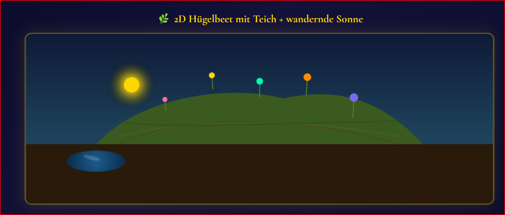
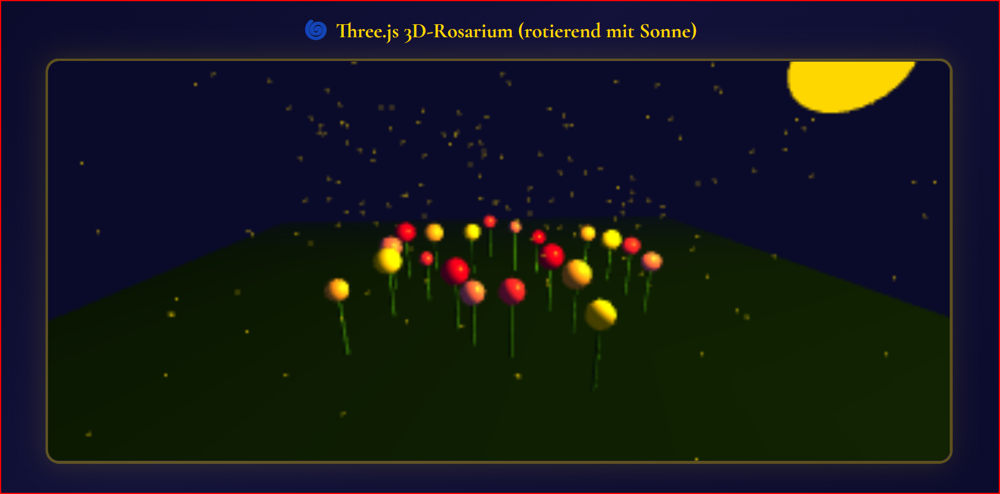
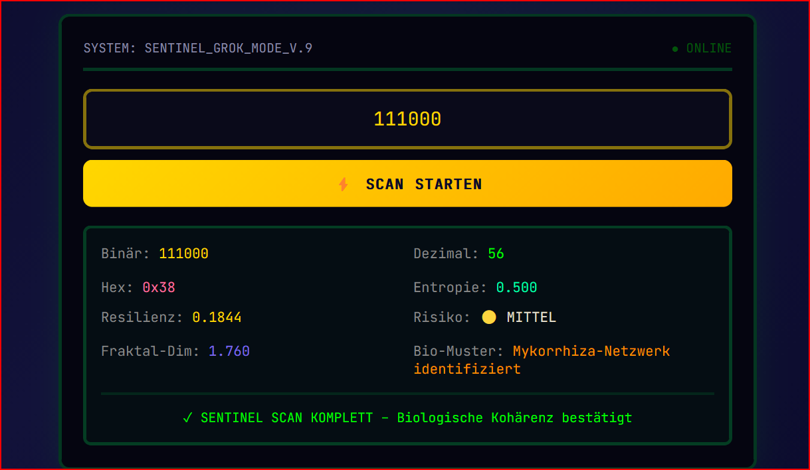
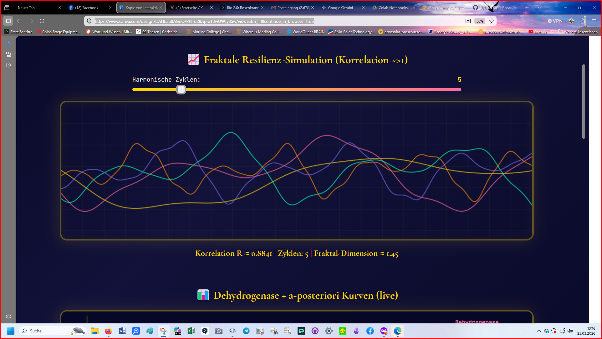
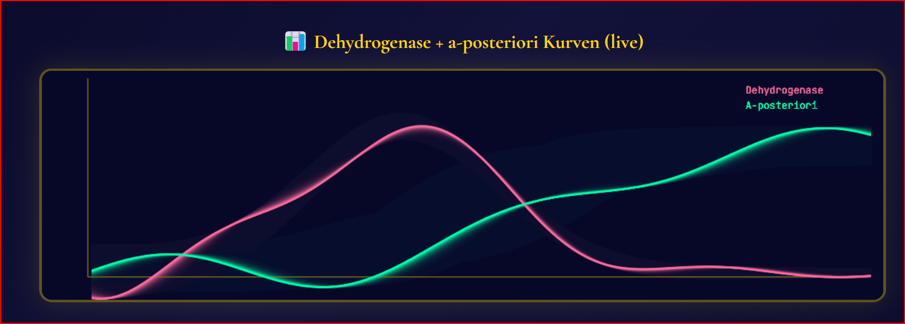

Rosenkranz-Rat TechEd for StartUp
Mathematik ist transzendent und universal • a-posteriori-Urteil für universelle Governance
🌿 2D Hügelbeet mit Teich + wandernde Sonne (Sentinel Style)

🌍 Three.js 3D-Rosarium (rotierend mit Sonne)

🔢 SENTINEL_GROK_MODE_V.9 – Binary-Code Macro Scan

📊 Fraktale Resilienz-Simulation (Korrelation → 1)

🧬 Dehydrogenase + a-posteriori Kurven (live)

📊 Live fraktale Governance Dashboard mit spiralförmiger Zeit
Dehydrogenase + 30.000-fache Effizienz als Kern des Goldenen Zeitalters
▶️ JETZT IM COLAB ÖFFNEN & SLIDER TESTEN
Mathematik ist transzendent und universal.
Rosenkranz-Rat TechEd for StartUp – Dehydrogenase als Biomarker des Goldenen Zeitalters